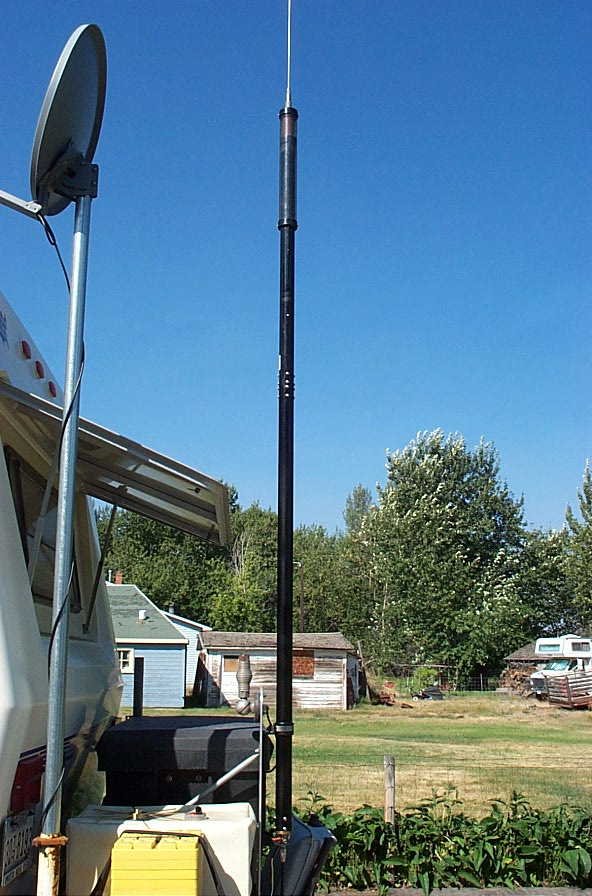
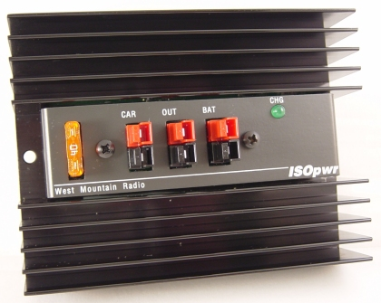
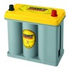
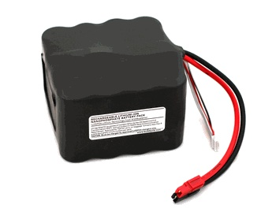
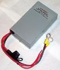
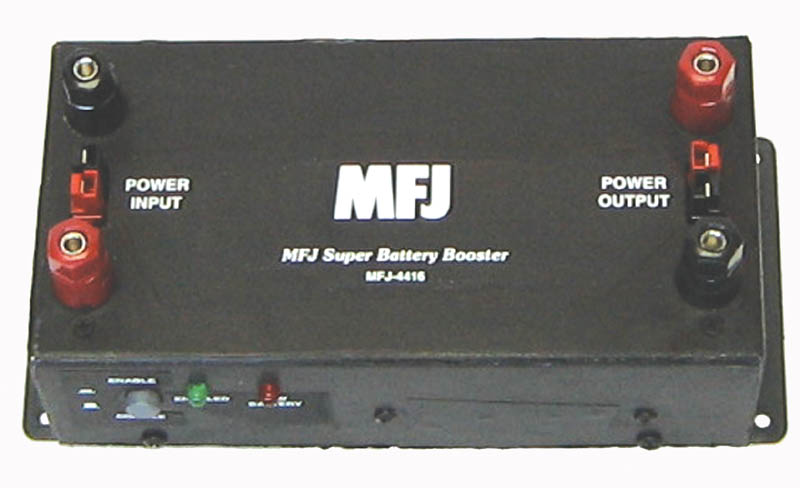
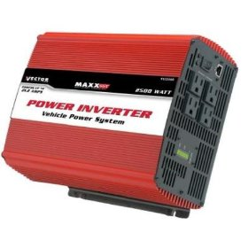
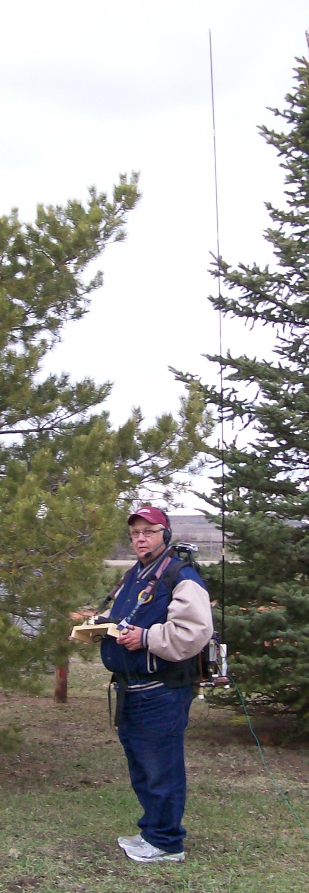

Basics
The premise of this site has always been based on mobile-in-motion, but a select number of amateurs include stationary mobile as part of their operating. While most who do might just use their existing HF mobile antenna, there are better alternatives. Further, there are special requirements with respect to power, and even safety considerations, which make stationary mobile (portable operation) a special case.
Other than the antenna, the most important aspect is the power — especially when it comes from batteries. Such operation requires ancillary devices to protect, isolate, and charge secondary batteries. These devices are ubiquitous in motor homes and some RVs and trailers. While partly covered in the Alternator & Batteries article, they're included here too.
There is a hidden aspect to portable operation: minimizing ground losses when using ground-mounted vertical antennas. There are a few things you can do to help, but you're never going to duplicate base-station performance.
I've never operated stationary mobile or portable, by any name. Yes, I've pulled over on a side street when I just had to have that DX contact, but that doesn't really count. I have operated the ARRL Field Day more times than I wish to admit. The situation really isn't any different from what's being discussed here. The hardware perhaps is, and maybe the creature comforts, but the intrinsic and logistic requirements are identical.
The Power Source
If you use a generator for power, you have to use standard precautions about gasoline filling and storage, exhaust fumes, and voltage stability. Most RVers know those rules and follow them carefully. It shouldn't be necessary to cover those here in any detail.
The following is sort of redundant for most RVers, as they already have what's commonly described as a house battery. They can be charged by a generator, solar panels, the RV's engine, or a towing vehicle such as a pickup truck. However, there is one aspect which needs further explanation: using the towing vehicle's electrical system to charge house batteries.
Modern, late-model vehicles monitor the output voltage and current from the alternator. The prime reason is pollution control, but there are others. Suddenly applying the load from a discharged set of house batteries to the vehicle's electrical system can cause an error code to be written to the engine's CPU, causing the MIL (Maintenance Indicator Light) to illuminate — the use of a battery isolator notwithstanding. There are a couple of foolproof ways around the issue.
Most vehicles designed to be used as towing vehicles have special trailer towing packages available. Besides a trailer hitch, electrical connections are available to power the running lights, brake lights, and in almost every case, a house battery charging circuit. For example, the Honda Ridgeline's hookup provides a monitored, relay-switched, 20-amp charging circuit. Some brands supply as much as 40 amps but use a special high-current connector. It pays to investigate these options when shopping for a towing vehicle.

Lots of folks just use a simple battery isolator and never have any problems (at least ones they know about). Simple diode isolators have a number of drawbacks, not the least of which is their forward voltage drop. They can also play havoc with the charging circuitry in some alternators. This leads some folks to use isolation relays, and they too have their drawbacks. There is one brand of isolator which combines the attributes of both: the one made by Hellroaring. It uses both diodes and FET switches in its design. It is also remotely controllable, which allows all batteries (two or three) to be combined if necessary. It is competitively priced and available directly from the factory. If you have to use an isolator, this is the one to use.
West Mountain Radio introduced the ISOpwr Auxiliary Battery Isolator, which offers a few advantages over its competitors. It connects the vehicle's battery system to an auxiliary battery whenever the vehicle's engine is running. When the engine is not running, the auxiliary battery is disconnected from the vehicle's battery, so equipment powered from the auxiliary battery never drains the vehicle's battery.

Perfect Switch makes both isolators and switches for high-current applications, both employing FET technology. One very good advantage is there are no contacts which could fuse together in a dead-short scenario. Drawing current over their rating will cause them to disconnect and require a reset — about as fail-safe as you can get.
The use of any battery isolator, no matter how sophisticated, is no guarantee that it will circumvent problems with on-board BMS (Battery Monitoring Systems). This is especially true of vehicles which use a VQM (Voltage Quality Module) or similar system to maintain a high level SOC (State of Charge). If in doubt, check with your dealer's service manager before connecting any battery charging or isolation equipment.
The House Battery
All lead-acid batteries generate hydrogen gas during normal operation, and this becomes excessive during overcharge conditions. Hydrogen gas is very explosive, and even a minor spark can ignite it. Any resulting explosion isn't a pretty sight, as the electrolyte is sulfuric acid. Since the gas is vented to the outside, flooded batteries shouldn't be used in enclosed areas like the trunk of a vehicle. AGM batteries outgas too, but the hydrogen gas is absorbed by the glass mat. However, overcharging can cause more gas to form than the mat can absorb. Therefore manufacturer's maximum charge rates shouldn't be exceeded.
Since most house batteries are mounted in enclosed spaces, the battery of choice is an AGM (Absorbent Glass Mat) type. Unlike a flooded battery, an AGM can be mounted in any position, even upside down. This said, any auxiliary battery should be installed in a battery box and properly restrained. Doing so also prevents accidental shorting of the exposed connections. The rule of thumb for battery restraints is 6Gs lateral and 4Gs vertical. The last thing you want is a 60-pound battery flinging acid all over the insides of your vehicle.
A typical lead-acid battery has an internal resistance at full charge of about 0.003 ohms, although some types are slightly higher and some slightly lower. Under direct-short conditions, the maximum current can exceed 3,000 amps, and a decent-quality AGM can approach 4,000 amps. Doing so can cause some batteries to self-destruct, hurling sulfuric acid far and wide. Keep plastic post caps on until you actually make the connections. When removing or installing them, the negative lead should be removed first and installed last.
If you think proper fusing isn't required because you use a circuit breaker, think again. There isn't a low-voltage circuit breaker made that can handle much over 2,500 amps without welding their contacts closed on a break. Fusing is especially critical when the house battery is multiple batteries in parallel, as the available fault current multiplies accordingly.
Other Batteries

There are a variety of other battery technologies to choose from, and most are covered in detail on the Battery University website. For example, Buddipole sells a variety of battery packs designed for portable operation, like their 4S4P A123 model. What is unique about this specific model is its 13.2V resting voltage. Unfortunately, the selling price (approximately $300) reflects its uniqueness.
The reason the Buddipole pack is worth mentioning is because it typically doesn't require a battery booster to be used (although a low-voltage monitor is suggested). A lead-acid (flooded or AGM) battery has a resting voltage of 12.2V. Depending on the Ah rating and the current draw applied, a lead-acid battery may drop in voltage far enough to cause some transceivers to shut themselves off — hence the need for a battery booster.
Whatever battery technology you choose, proper care, maintenance, wiring, fusing, charging, and safe handling are important items of consideration.
Battery Boosters

It is important to maintain the battery voltage at or very near your transceiver's designated input voltage. This is why most portable operators opt for a Battery Booster. Known by at least a dozen names, these devices act like switching power supplies: although the input voltage drops, the output remains steady. Most include a low-voltage cutoff, but some don't, which can lead to problems.
As stated above, any nominal 12-volt lead-acid battery is considered discharged when the voltage drops to 10.5 volts under load. In any case, battery voltage should be monitored. Martel Electronics makes a low-current two-wire voltmeter that's a good choice for monitoring battery voltage. It draws just 2 milliamps, so it can be left connected indefinitely. Those voltmeters which have become ubiquitous in most GM vehicles aren't accurate enough for this job, much less portable operation. It pays to have something better, especially if portable operation is your mainstay.
Power Inverters

There are two major types of power inverters: Modified Sine Wave (MSW) and Pure Sine Wave (PSW). MSW inverters are prone to generating RFI. While less expensive than PSW units, their extra cost is easy to justify when weighed against the cost of filtering out the RFI — a nearly impossible task.
One problem you might encounter when using MSW units is powering devices that use switching power supplies. The staggered ramp-up of the output voltage causes them to operate erratically. It doesn't happen all the time, but often enough to be of concern.
Efficiency rating changes with the load. At light load levels, efficiency is somewhat lower than at mid-loading, and typically goes back down near full loading. Therefore, you should select one which matches your load requirements. There are models available which operate in reverse: when connected to the mains, they recharge the connected batteries. Except for large RVs, these are rarely seen, as they're very expensive.
There is another potential problem exacerbated by power inverters: ground loops. RV manufacturers don't make the chassis of their coaches — bus, truck, and van manufacturers do that for them. Little if any thought goes into how things are grounded throughout most RVs. Correcting built-in ground loop problems can be a very exasperating undertaking, especially when the coach and/or chassis manufacturer won't cooperate. Few coach builders have published wiring schematics, and when they do they're often incorrect.
Antenna Choices

Any antenna is better than none, some will argue — but it is very frustrating when you can't make reliable contacts. Your average HF mobile antenna is at a disadvantage compared to even a simple dipole, no matter how it is mounted. That fact doesn't mean you can't use one, but there are better choices.
One way to improve an HF mobile antenna's performance is to reduce the inherent ground losses, but you have to jump through a few hoops. For example, a lot of RVers mount their antennas in the RV's ladder. To be honest, this is probably the worst place, as the ladder is a very poor ground plane. As a result, ingress and egress common mode currents cause havoc with both receive and transmit functions. Some apply radials to the bottom of the ladder assuming that will improve the situation. It doesn't, and in fact can cause the common mode problem to increase. Where the radials need to be placed is at the base of the antenna. Quite obviously, in this case, it is a logistics nightmare.
For anyone contemplating installing radials to improve their existing or future antenna, read the articles on radials published by Rudy Severns, N6LF. Take note of the differences between the requisite lengths between ground and elevated installations.

Buddipole makes very unique portable antenna systems. Although individual parts can be purchased, the complete BuddyPole Deluxe package sells for $400. There are literally dozens of antenna combinations which can be made up from the kit, from dipoles to verticals. These antennas are not meant for permanent installations. Rather, they're for backpackers, Field Day activities, emergency communications, or whenever an easy-to-erect temporary antenna is needed. The elements themselves have a piece of shock cord throughout their length — it takes just a moment to extend them, and their tip is adjustable to aid in matching to the frequency in use.
There isn't anything special about a 43-foot vertical, all the current rage notwithstanding. Even a 30-foot insulated mast, with an auto-coupler mounted at the base and a few radials, will work much better than most HF mobile antenna installations. The key factors are height, proper radials placed at the base, and a quality auto-coupler — not the specific length of the radiator.
Pedestrian Mobile

Backpackers represent one class of portable operation, but there is another often referred to as Ped Mobile. Whether actually walking as the name implies, it isn't too far of a stretch to include pedal mobile — bicycle mobile in other words. The Buddipole is often deployed in either case, as their light weight and easy-to-deploy nature makes them a favorite.
The lack of a large power source (alternator, generator, etc.) typically dictates QRP power levels, but with an adequate battery system, even 100 watts PEP is doable. The preferred mode by most ped mobile operators is CW for very obvious reasons. At least one bicycle mobile operator I know uses a modified bicycle generator to charge up the battery.
We all know that even a fairly large vehicle represents an inadequate ground plane well into the VHF region. Imagine then the problems faced by ped mobile operators, with little metal mass surrounding them. Yet, with some attention to detail, a viable ped mobile station can be a reality. While you won't set the world on fire signal-wise, it is nonetheless amazing what can be done if one has the patience. Ken Muggli, KØHL, put some very rare North Dakota counties on the air while walking away over 122 pounds of excess weight. Congratulations to him.
Other Things
There are a few things you can do when portable that are dangerous when in motion, not the least of which is CW. So of course is any digital mode, including slow-scan TV. Remember, some of these modes are full-duty cycle and require a more substantial power source than just batteries alone.
There are a lot of other considerations, and most of them parallel your average mobile installation. Wiring, safety, and above all, neatness counts. And don't forget to notify your insurance company that you have amateur radio gear installed in your RV. For more information on insurance requirements, see the Amateur Mobile Insurance article.
Modern Considerations
The portable operation landscape has evolved significantly since this content was first written. Lithium iron phosphate (LiFePO4) batteries have become the dominant choice for portable operation, offering roughly three times the usable capacity of AGM in the same weight, excellent cycle life (2,000+ cycles to 80% capacity), and flat discharge curves that maintain voltage well throughout the discharge cycle. They also require a compatible charger — a standard lead-acid charger will not charge them properly and may damage them.
Solar charging has become practical and affordable for portable operation. Even a modest 100-watt panel with an MPPT charge controller can sustain extended portable operation on sunny days. The key is proper sizing: calculate your total daily amp-hour consumption, factor in your typical sun hours, and size the panel array accordingly. Overcast conditions can reduce output by 70-80%.
When operating portable from a vehicle at a fixed location, park so the antenna is as far from power lines and other sources of conducted noise as practical. The ambient noise floor at a quiet rural location can be dramatically lower than at a typical suburban site, which makes weaker signals copyable that would otherwise be buried in the noise.
The POTA (Parks on the Air) program has dramatically increased interest in portable operation and has generated a wealth of practical experience from operators in the field. The community's accumulated knowledge on efficient portable setups — lightweight radios, compact antennas, battery management — is worth tapping before investing in equipment.